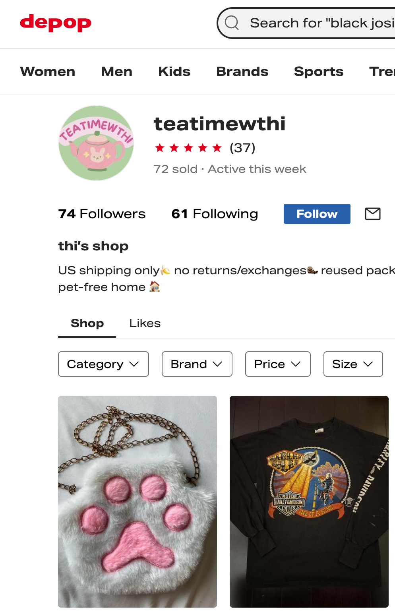
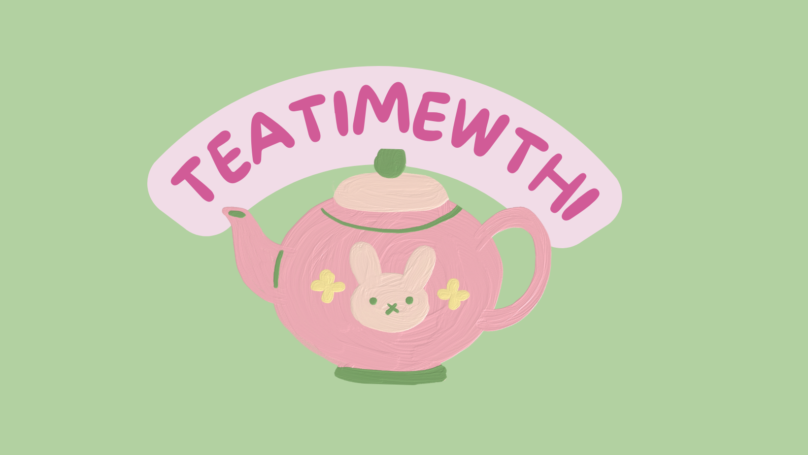

Teatimewthi — Depop Logo + Branding
Logo for a Depop clothing seller made in Canva. Main component is a tea pot bunny I painted.

Primary Depop logo variation.

Matching profile picture / icon version for social use.